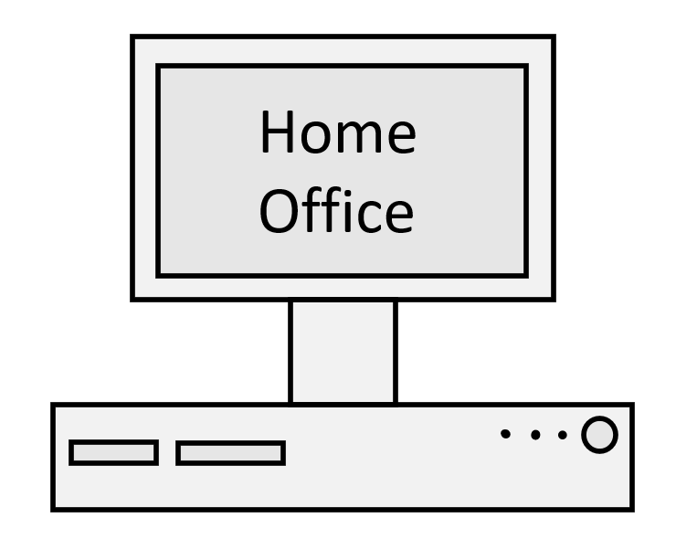
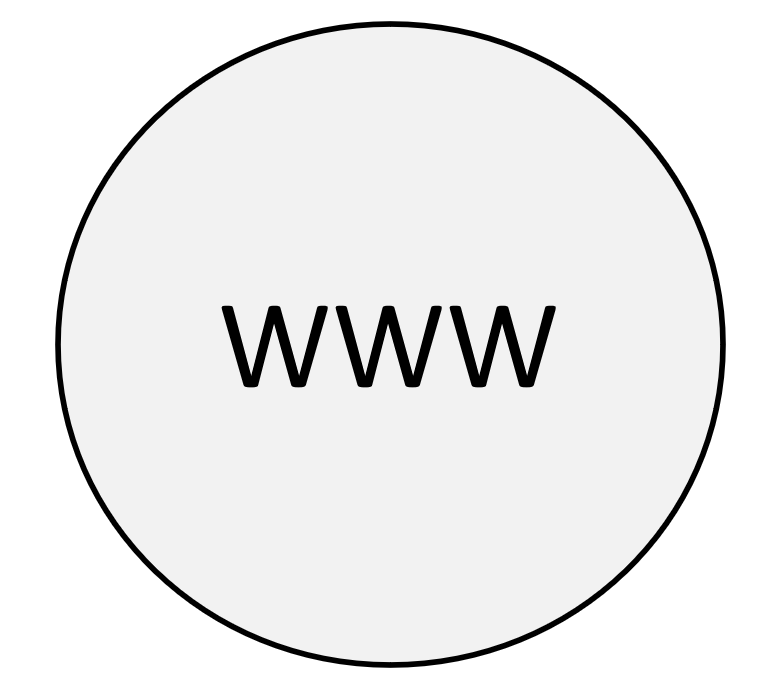

Ständiges Arbeiten im Home Office aufgrund von Bequemlichkeit führt zu Isolation und kann körperliche und psychische Probleme verursachen. Dazu verlieren viele ihre Arbeitsplätze, da sie durch Roboter abgelöst werden.

Globalisierung führt zu starker Konkurrenz wodurch der Erfolg als kleines Unternehmen stark eingeschränkt werden kann. Es kann außerdem ein großer Nachteil für eine berufliche Laufbahn sein, wenn das Internet schlecht über einen berichtet, da sich im Internet nichts löschen lässt.